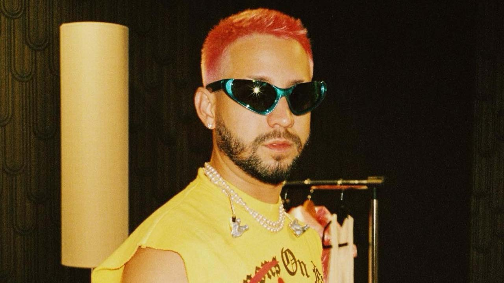

Biografía
Gabriel Armando Mora Quintero (Bayamón, 18 de abril de 1996), conocido por su nombre artístico Mora, es un cantante, compositor y productor discográfico puertorriqueño.
A la corta edad de seis años de edad comenzó a tocar la flauta y luego aprendió tocar el piano. Estudió en una escuela elemental Montessori, cuyo enfoque es más en las artes que en estudios tradicionales. En su adolescencia practicó los deportes baloncesto y tenis en el Colegio San José en Río Piedras, pero nunca dejó la música. Estudió Administración de empresas en la Universidad de Puerto Rico, fue aceptado y dejó la carrera poco tiempo después. También asistió a Berklee College of Music, la cual al poco tiempo desistió. Finalmente probaría suerte por cuenta propia en 2017, lanzando entonces sus primeras canciones.
Inicios
Se incursionó en la música en el año 2017, uno de sus primeros sencillos se título «Provocándome». Le siguió, ese mismo año, «Señorita» junto a Rafa Pabön y luego vino el exitoso remix de «Pensabas» con Eladio Carrión, Brray y Joyce Santana. Los éxitos no pararon ahí. Como independiente, Mora también lanzó «Nunca seremos», «Hasta cuándo» y «Noche loca». Posterior a estos lanzamientos, el artista puertorriqueño firmó contrato con la compañía discográfica Rimas Music en 2018.